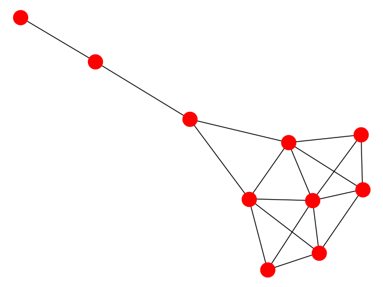

Note
Click here to download the full example code
Krackhardt Centrality¶
Centrality measures of Krackhardt social network.
Out:
Betweenness
00 0.023
01 0.023
02 0.000
03 0.102
04 0.000
05 0.231
06 0.231
07 0.389
08 0.222
09 0.000
Degree centrality
00 0.444
01 0.444
02 0.333
03 0.667
04 0.333
05 0.556
06 0.556
07 0.333
08 0.222
09 0.111
Closeness centrality
00 0.529
01 0.529
02 0.500
03 0.600
04 0.500
05 0.643
06 0.643
07 0.600
08 0.429
09 0.310
# Author: Aric Hagberg (hagberg@lanl.gov)
# Date: 2005-05-12 14:33:11 -0600 (Thu, 12 May 2005)
# Revision: 998
# Copyright (C) 2004-2018 by
# Aric Hagberg <hagberg@lanl.gov>
# Dan Schult <dschult@colgate.edu>
# Pieter Swart <swart@lanl.gov>
# All rights reserved.
# BSD license.
import matplotlib.pyplot as plt
import networkx as nx
G = nx.krackhardt_kite_graph()
print("Betweenness")
b = nx.betweenness_centrality(G)
for v in G.nodes():
print("%0.2d %5.3f" % (v, b[v]))
print("Degree centrality")
d = nx.degree_centrality(G)
for v in G.nodes():
print("%0.2d %5.3f" % (v, d[v]))
print("Closeness centrality")
c = nx.closeness_centrality(G)
for v in G.nodes():
print("%0.2d %5.3f" % (v, c[v]))
nx.draw(G)
plt.show()
Total running time of the script: ( 0 minutes 0.042 seconds)